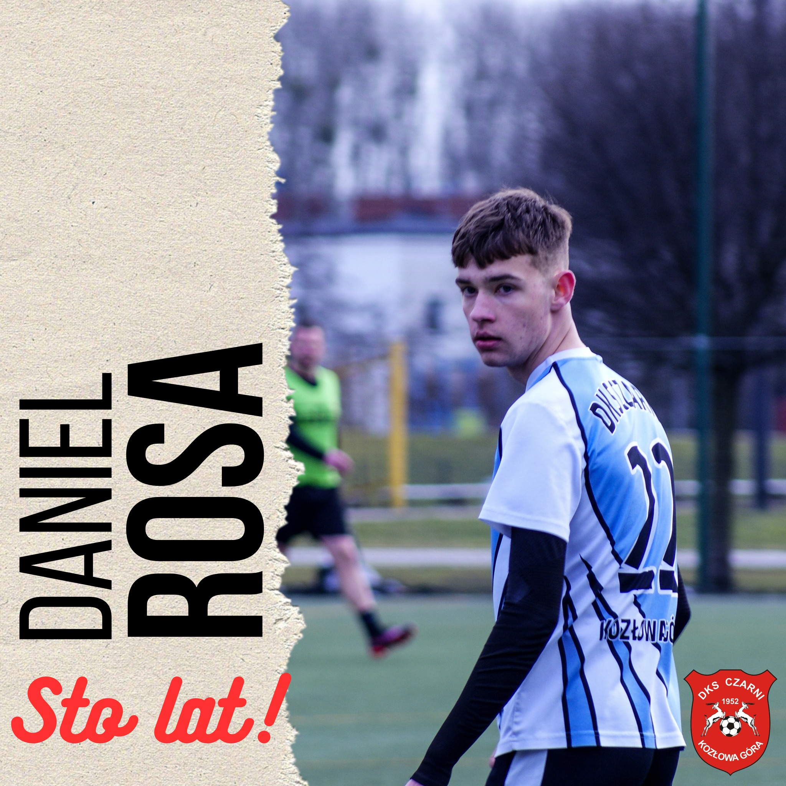
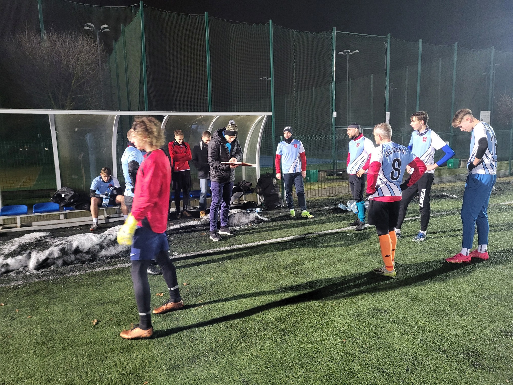
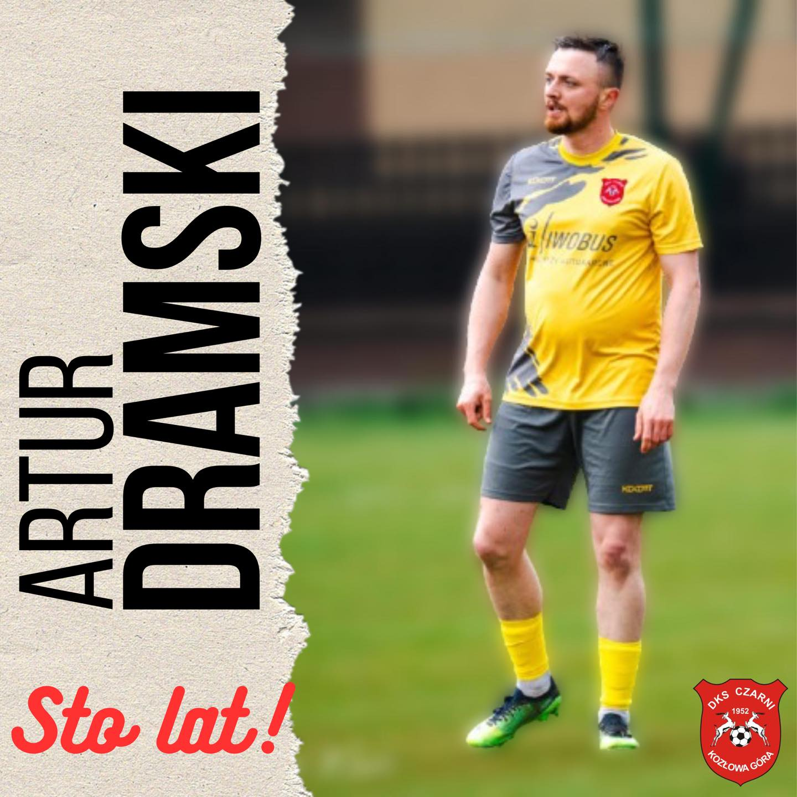
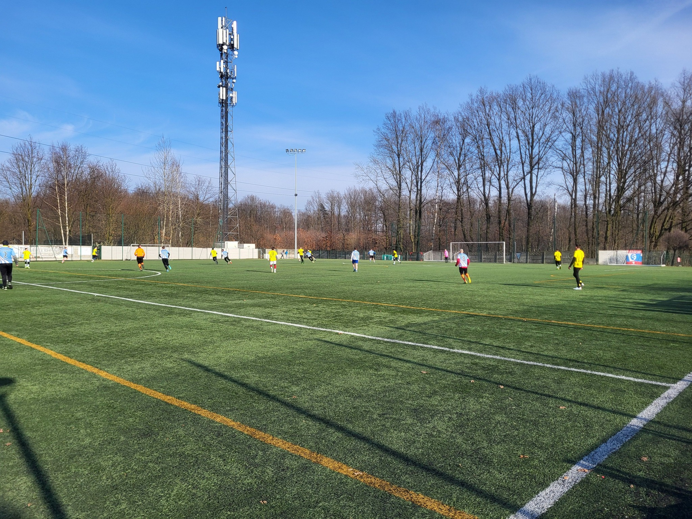
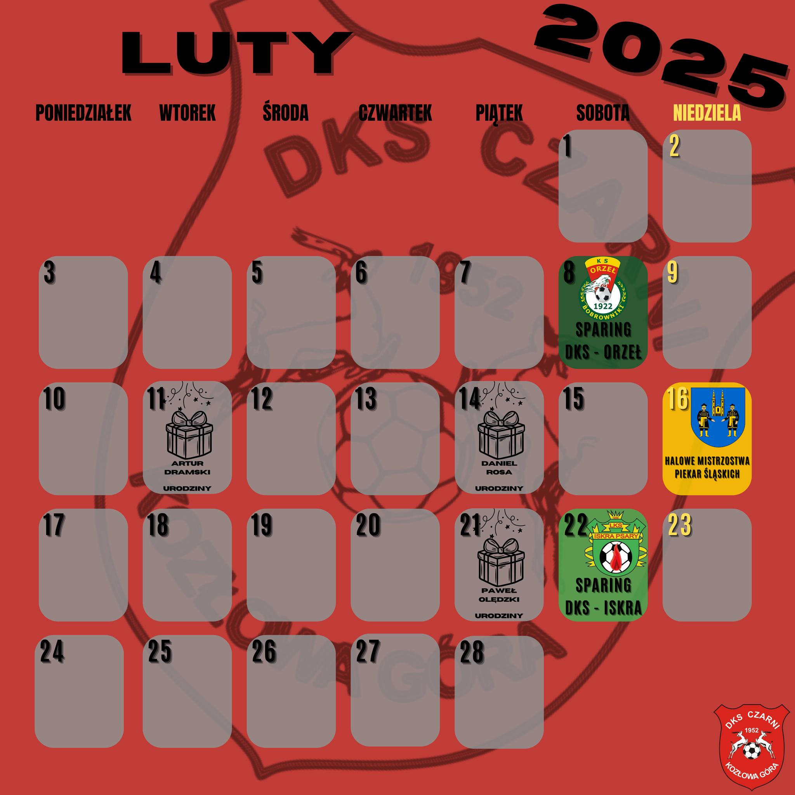
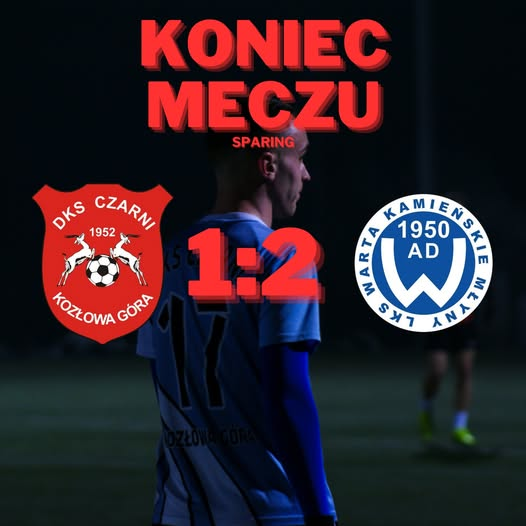
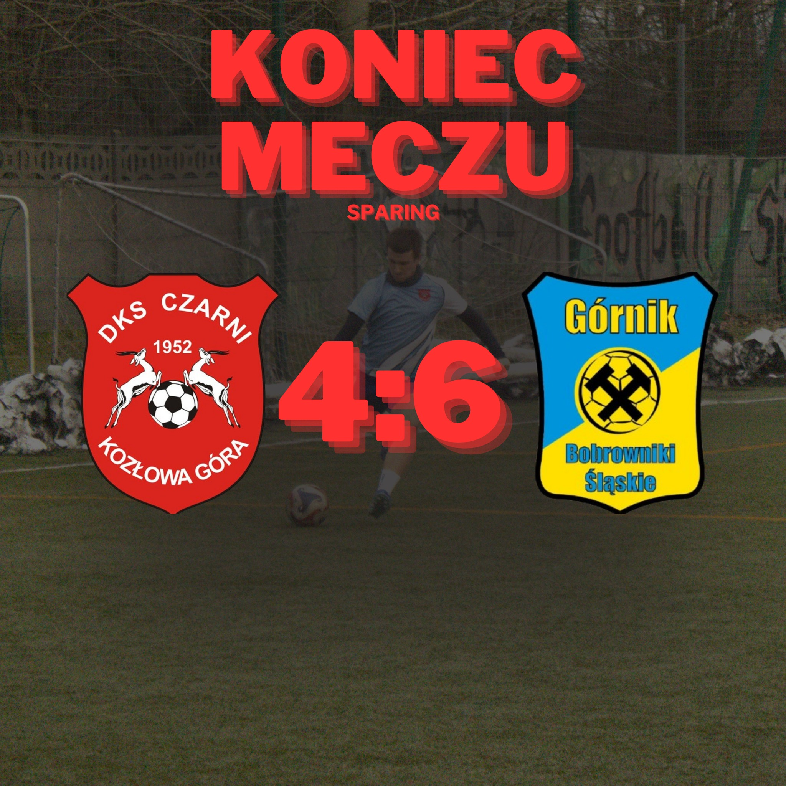
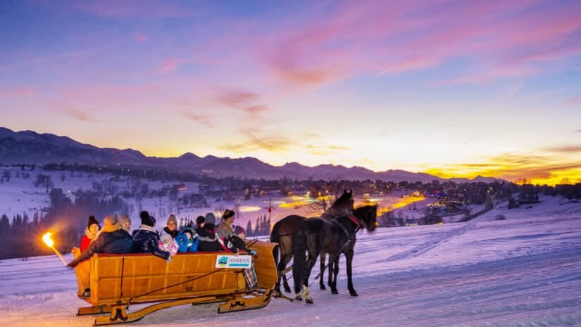

Urodziny zawodnika
Swoje 18 urodziny obchodzi dzisiaj nasz junior - Daniel Rosa!🥳 Wszystkiego najlepszego Dansi!🥳
Sparing #4
Sparing nr 4
Czarni KG - Naprzód Żernica 3:3
Bramki: Skowronek x2, Janus.
Skład: Pietrzyk, Kotuła, Włodarczyk, Dyszy, Kwaśniewski, Dikta, Surowiec, Białach, Wojtacha, Musialik, Skowronek.
Ponadto grali: Finka, Janus.
Sparing #4
🏆 A klasa - Sparing nr 4
⚽️ DKS Czarni KG 🆚 Naprzód Żernica
🏟 MOSiR Piekary Śląskie
📆 13.02 czwartek
🕒 20.00
Zapraszamy❗️❗️❗️
Urodziny zawodnika
Dzisiaj swoje urodziny obchodzi nasz zawodnik - Artur Dramski!🥳 Wszystkiego najlepszego Artur!
Sparing #3
Sparing nr 3
Czarni KG - Orzeł Bobrowniki 11-2 ( 6-1)
Bramki: Guła x3, Surowiec x2, Wojtacha x2, Białach, Kurzac, Sprot, Skutela.
Skład: Szastok, Kotuła, Włodarczyk, Dyszy, Finka, Skutela, Sprot, Surowiec, Białach, Wojtacha, Guła.
Ponadto grali: Ryrko, Pietrzyk, Lizurek, Guldziński, Kurzac, Drożdż, Dikta.
Sparing #3
<🏆 A klasa - Sparing nr 3
⚽️ DKS Czarni KG 🆚 Orzeł Bobrowniki
🏟 MOSiR Piekary Śląskie
📆 08.02 sobota
🕒 13.00
Zapraszamy❗️❗️❗️
Terminarz na Luty!
Przed nami intensywny miesiąc pełen emocji! Już 8 lutego nasza drużyna zmierzy się w sparingu z Orzeł Bobrowniki.
16 lutego powalczymy w Halowych Mistrzostwach Piekar Śląskich, a 22 lutego czeka nas kolejny test formy przeciwko LKS Iskra Psary.
Przegrania w sparingu
Wczoraj w sparingu nasza drużyna zmierzyła się z występującą ligę wyżej Wartą Kamieńskie Młyny.
Spotkanie zakończyło się zwycięstwem gości 1:2, a jedyną bramkę dla naszej drużyny zdobył Szymon Guła.
Warto zaznaczyć, że w 1 połowie nasz bramkarz Piotr Ryrko wybronił rzut karny przeciwników!
🔴⚫ Skład: Ryrko, Dyszy, Włodarczyk, Kotuła, Pietrzyk, Skutela, Białach, Sprot, Surowiec, Wojtacha, Guła oraz Szastok, Dikta, Janus, Drożdż, Skowronek.
Sparing
🏆 A klasa - Sparing nr 2
⚽️ DKS Czarni KG 🆚 Warta Kamieńskie Młyny
🏟 MOSiR Piekary Śląskie
📆 30.01 czwartek
🕒 20.00
Zapraszamy❗️❗️❗️
Koniec Meczu: Sparing
⚽️ W sobotnie popołudnie nasz zespół zmierzył się z występującym o ligę wyżej Górnikiem Bobrowniki Śląskie w niezwykle emocjonującym meczu, który zakończył się wynikiem 4:6.
Branki dla naszej drużyny zdobyli:
- Kurzac
- Górny
- Białach
- Sprot
⚡ Na boisku pokazaliśmy charakter i ogromne zaangażowanie, choć ostatecznie wynik był korzystniejszy dla rywali, ten mecz pokazał, że jesteśmy gotowi walczyć z każdym!
📋 Skład: Szastok, Kwaśniewski, Kotłua, Włodarczyk, Dyszy, Skutela, Kuś, Białach, Wojtacha, Kurzac, Sprot, Gula, Dramski, Górny
Sparing #1
🏆 A klasa - Sparing nr 1
⚽️ DKS Czarni KG 🆚 Górnik Bobrowniki
🏟 MOSiR Piekary Śląskie
📆 25.01 sobota
🕒 15.00
Zapraszamy❗️❗️❗️

Kulig w Zakopanem ❗❗❗
Niestety wycieczka do Zakopanego nie dojdzie do skutku, ze względu na niewystarczającą ilość chętnych osób.
Okres przygotowawczy do rundy rewanżowej sezonu 2024/2025 drużyny seniorów
We wtorek 14 stycznia o godzinie 19.45 na sztucznym boisku MOSiR-u w Piekarach Śląskich rozpocznie się okres przygotowawczy drużyny seniorów. W tym okresie treningi będą odbywać się w każdy wtorek i czwartek o godzinie 19.45. Wszystkie treningi oraz sparingi zostaną przeprowadzone na sztucznym boisku MOSiR-u w Piekarach Śląskich.
Na półmetku sezonu Nasz zespół zajmuje 6 lokatę w tabeli z dorobkiem 22 punktów, tracąc do lidera zaledwie 4 punkty. W tym okresie przygotowawczym drużyna musi poprawić grę obronną oraz skuteczność.
Serdecznie zapraszamy nowych zawodników, którzy chcieliby spróbować sił w Naszej drużynie.
Plan sparingów:
- ⚽️ 25 stycznia (sobota) godz 14.30 - Górnik Bobrowniki Śląskie
- ⚽️ 30 stycznia (czwartek) godz 20.00 - Warta Kamieńskie Młyny
- ⚽️ 8 luty (sobota) godz 14.30 - Orzeł Bobrowniki
- ⚽️ 16 luty (niedziela) godz 9.00 - Halowe Mistrzostwa
- ⚽️ 22 luty (sobota) godz 14.30 - Iskra Psary
- ⚽️ 1 marca (sobota) godz 14.30 - GKS Andaluzja
Kulig w Zakopanem ❗❗❗
Klub Czarni Kozłowa Góra wraz MCIiT Piekary Śląskie organizuje wycieczkę w Tatry w dniach 15-16 luty 2025. Osoby zainteresowane prosimy o wstępną rezerwację do 1 stycznia 2025 roku w celu potwierdzenia ilości chętnych osób (min 40). Rezerwacje prosimy składać:
- Mirosław Szastok tel 784 052 133
- Marian Rybicki 506 040 782
TERMIN: 15-16.02.2025 r.
PROGRAM:
Dzień 1
- Wyjazd z Kozłowej Góry o godz. 7:00, przejazd przez Kraków do Zakopanego,
- Przyjazd do stolicy Podhala ok. 11.30, objazd ulicami miasta, czas wolny (ok. 2 h), ewentualny posiłek we własnym zakresie, dla chętnych wyjazd na Gubałówkę,
- Ok. 15.00 - przejazd do pensjonatu w Zakopanem Olczy, zakwaterowanie, obiad,
- Ok. 17.00 - kulig w okolicy, ognisko z kiełbaskami,
- Ok. 20.00 – kolacja (zimna płyta), zabawa w pensjonacie przy muzyce mechanicznej.
Dzień 2
- Śniadanie, wykwaterowanie z pensjonatu,
- Ok. 10.00 – wyjazd do Białki Tatrzańskiej, pobyt na kąpielisku „Terma Bania” (ok. 4 h).
- Powrót do Kozłowej Góry w godzinach wieczornych (ok. godz. 19.00 – 20.00).
INFORMACJE ORGANIZACYJNE:
Cena: 440 zł/os. obejmuje:
- Transport autokarem, opłaty drogowe, ubezpieczenie NNW, obsługa przewodnika, nocleg w pensjonacie, wyżywienie: śniadanie, obiad, bankiet (zimna płyta), kulig, ognisko z kiełbaskami,
- Zakwaterowanie w pensjonacie „Tulipan” w Zakopanem Olczy, w pokojach 2 i 3-osobowych z pełnym węzłem sanitarnym.
- Na bilety wstępu: na termy (ok. 30 zł/os.), bilety na Gubałówkę (ok. 20 zł/os.).